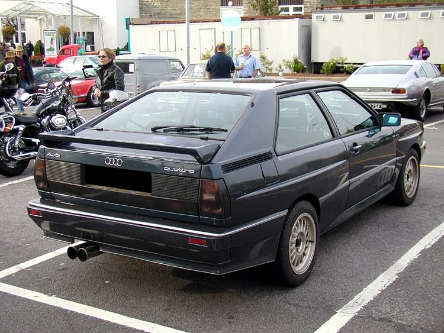

Az Audi AG általában Audiként ismert német autógyártó vállalat, melynek székhelye a németországi Ingolstadtban található. 1964 óta 99,7%-ban a Volkswagen AG leányvállalata. Gépjárműveit a felső-közép, illetve a felső kategóriába pozicionálja. A cég egyik fontos jármű-, és motorgyára található Győrben, az Audi Hungaria Zrt.
Négy márka, az Audi, a DKW, a Horch és a Wanderer összeolvadásából jött létre 1932-ben, hogy megalapítsa az Auto Union AG márkát, amelynek emblémájául a négy karikát választották. Az Audi AG az Audi NSU Auto Union AG-ből alakult 1985-ben. Az Auto Union GmbH és az NSU GmbH tradicionális márkákkal együtt az Audi Tradition készíti és bemutatja az Audi tartalmas és szerteágazó történelmét.
Az egyesítés az Auto Uniont Németország második legnagyobb autógyártójává tette az 1930-as években.
A széles körű portfóliót, amely akkoriban a négy karikát jellemezte, Essenben az alábbi járművek szemléltetik: